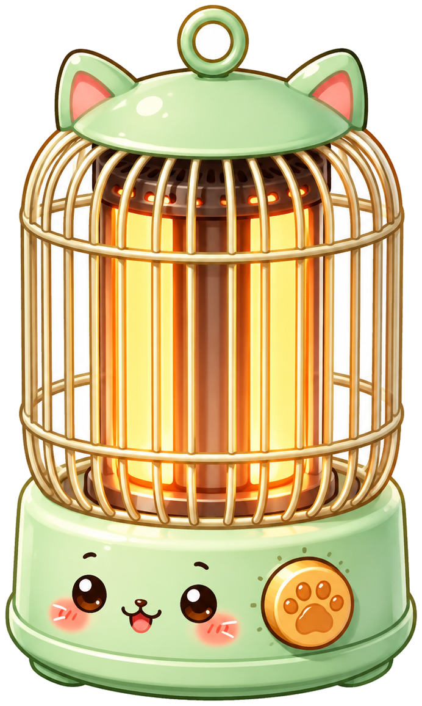

<!DOCTYPE html>
<html lang="zh-CN">
<head>
<meta charset="UTF-8" />
<meta name="viewport" content="width=device-width, initial-scale=1.0" />
<title>Warm Kitty</title>
<link href="vendor/fonts.css" rel="stylesheet" />
<style>
  * { box-sizing: border-box; }
  html, body { margin: 0; padding: 0; }
  body {
    font-family: 'Baloo 2', 'PingFang SC', 'Hiragino Sans GB', 'Microsoft YaHei', system-ui, sans-serif;
    background: #D8C9B3;
    -webkit-font-smoothing: antialiased;
    -webkit-user-select: none; user-select: none;
  }
  /* this is a native app shell — no dragging images/text out, no selection */
  img { -webkit-user-drag: none; user-drag: none; }

  @keyframes wk-fade { from { opacity: 0; transform: translateY(5px); } to { opacity: 1; transform: none; } }

  /* cat ambient animations */
  @keyframes wk-breathe { 0%,100% { transform: scaleY(1); } 50% { transform: scaleY(1.025); } }
  .cat-breathe { animation: wk-breathe 3.4s ease-in-out infinite; }
  @keyframes wk-puff { 0% { opacity: 0; transform: translate(0,0); } 40% { opacity: .8; } 100% { opacity: 0; transform: translate(10px,-14px); } }
  .cat-puff { animation: wk-puff 2.6s ease-in-out infinite; transform-origin: center; }
  @keyframes wk-steam { 0% { opacity: 0; transform: translateY(6px); } 50% { opacity: .65; } 100% { opacity: 0; transform: translateY(-10px); } }
  .cat-steam { animation: wk-steam 2.8s ease-in-out infinite; }
  @keyframes wk-note { 0% { opacity: 0; transform: translate(0,4px) rotate(-8deg); } 50% { opacity: 1; } 100% { opacity: 0; transform: translate(6px,-14px) rotate(8deg); } }
  .cat-note { animation: wk-note 2.4s ease-in-out infinite; fill: #E0925A; }
  @keyframes wk-sparkle { 0%,100% { opacity: .3; transform: scale(.8); } 50% { opacity: 1; transform: scale(1.1); } }
  .cat-sparkle { animation: wk-sparkle 1.8s ease-in-out infinite; transform-origin: center; }
  @keyframes wk-sweat { 0% { opacity: 0; transform: translateY(-2px); } 30% { opacity: .9; } 100% { opacity: 0; transform: translateY(10px); } }
  .cat-sweat { animation: wk-sweat 1.4s ease-in infinite; }
  @keyframes wk-heat { 0%,100% { opacity: .3; } 50% { opacity: .85; } }
  .cat-heat { animation: wk-heat 1.3s ease-in-out infinite; }

  /* shivering — applied via state on the svg root through a wrapper */
  @keyframes wk-shiver { 0%,100% { transform: translateX(-1.2px); } 50% { transform: translateX(1.2px); } }
  .cat-shiver { animation: wk-shiver 0.16s linear infinite; }

  /* range slider */
  .wk-range {
    -webkit-appearance: none; appearance: none; width: 100%; height: 10px; border-radius: 999px;
    background: linear-gradient(90deg, var(--accent) 0%, var(--accent) var(--p), rgba(110,74,51,0.16) var(--p), rgba(110,74,51,0.16) 100%);
    outline: none; cursor: pointer; margin: 0;
  }
  .wk-range::-webkit-slider-thumb {
    -webkit-appearance: none; appearance: none; width: 26px; height: 26px; border-radius: 50%;
    background: #fff; border: 3px solid var(--accent);
    box-shadow: 0 2px 6px rgba(110,74,51,0.3); cursor: grab; margin-top: 0;
  }
  .wk-range::-webkit-slider-thumb:active { cursor: grabbing; transform: scale(1.08); }
  .wk-range::-moz-range-thumb {
    width: 26px; height: 26px; border-radius: 50%; background: #fff; border: 3px solid var(--accent);
    box-shadow: 0 2px 6px rgba(110,74,51,0.3); cursor: grab;
  }

  /* button */
  .wk-btn {
    width: 100%; height: 56px; border-radius: 16px; border: 2px solid transparent;
    font-family: 'ZCOOL KuaiLe', 'PingFang SC', system-ui; font-size: 18px; letter-spacing: 0.02em; white-space: nowrap;
    display: flex; align-items: center; justify-content: center; gap: 8px;
    cursor: pointer; transition: transform .12s ease, box-shadow .2s ease, background .3s ease;
    box-shadow: 0 8px 18px -6px color-mix(in srgb, var(--accent) 60%, transparent);
  }
  .wk-btn:hover { transform: translateY(-1px); box-shadow: 0 12px 22px -6px color-mix(in srgb, var(--accent) 65%, transparent); }
  .wk-btn:active { transform: translateY(1px) scale(0.99); }
  .wk-pulse { width: 11px; height: 11px; border-radius: 50%; display: inline-block; animation: wk-heat 1s ease-in-out infinite; }
  @keyframes wk-warnpulse { 0%,100% { opacity: 0.5; } 50% { opacity: 1; } }
  .wk-warn { animation: wk-warnpulse 1.5s ease-in-out infinite; }
  @keyframes wk-ping { 0% { transform: scale(0.94); opacity: 0; } 22% { opacity: 0.9; } 100% { transform: scale(1.16); opacity: 0; } }
  .wk-ding { animation: wk-ping 0.75s cubic-bezier(.2,.7,.3,1) both; transform-origin: 50% 50%; }
  @keyframes wk-pop { 0% { transform: scale(1); } 35% { transform: scale(1.13); } 100% { transform: scale(1); } }
  .wk-pop { animation: wk-pop 0.55s cubic-bezier(.34,1.5,.5,1); }
</style>
</head>
<body>
  <div id="root"></div>

  <script src="vendor/react.js"></script>
  <script src="vendor/react-dom.js"></script>
  <script src="vendor/babel.js"></script>

  <script type="text/babel">

/* BEGIN USAGE */
// tweaks-panel.jsx
// Reusable Tweaks shell + form-control helpers.
// Exports (to window): useTweaks, TweaksPanel, TweakSection, TweakRow, TweakSlider,
//   TweakToggle, TweakRadio, TweakSelect, TweakText, TweakNumber, TweakColor, TweakButton.
//
// Owns the host protocol (listens for __activate_edit_mode / __deactivate_edit_mode,
// posts __edit_mode_available / __edit_mode_set_keys / __edit_mode_dismissed) so
// individual prototypes don't re-roll it. Ships a consistent set of controls so you
// don't hand-draw <input type="range">, segmented radios, steppers, etc.
//
// Usage (in an HTML file that loads React + Babel):
//
//   const TWEAK_DEFAULTS = /*EDITMODE-BEGIN*/{
//     "primaryColor": "#D97757",
//     "palette": ["#D97757", "#29261b", "#f6f4ef"],
//     "fontSize": 16,
//     "density": "regular",
//     "dark": false
//   }/*EDITMODE-END*/;
//
//   function App() {
//     const [t, setTweak] = useTweaks(TWEAK_DEFAULTS);
//     return (
//       <div style={{ fontSize: t.fontSize, color: t.primaryColor }}>
//         Hello
//         <TweaksPanel>
//           <TweakSection label="Typography" />
//           <TweakSlider label="Font size" value={t.fontSize} min={10} max={32} unit="px"
//                        onChange={(v) => setTweak('fontSize', v)} />
//           <TweakRadio  label="Density" value={t.density}
//                        options={['compact', 'regular', 'comfy']}
//                        onChange={(v) => setTweak('density', v)} />
//           <TweakSection label="Theme" />
//           <TweakColor  label="Primary" value={t.primaryColor}
//                        options={['#D97757', '#2A6FDB', '#1F8A5B', '#7A5AE0']}
//                        onChange={(v) => setTweak('primaryColor', v)} />
//           <TweakColor  label="Palette" value={t.palette}
//                        options={[['#D97757', '#29261b', '#f6f4ef'],
//                                  ['#475569', '#0f172a', '#f1f5f9']]}
//                        onChange={(v) => setTweak('palette', v)} />
//           <TweakToggle label="Dark mode" value={t.dark}
//                        onChange={(v) => setTweak('dark', v)} />
//         </TweaksPanel>
//       </div>
//     );
//   }
//
// TweakRadio is the segmented control for 2–3 short options (auto-falls-back to
// TweakSelect past ~16/~10 chars per label); reach for TweakSelect directly when
// options are many or long. For color tweaks always curate 3-4 options rather than
// a free picker; an option can also be a whole 2–5 color palette (the stored value
// is the array). The Tweak* controls are a floor, not a ceiling — build custom
// controls inside the panel if a tweak calls for UI they don't cover.
/* END USAGE */
// ─────────────────────────────────────────────────────────────────────────────

const __TWEAKS_STYLE = `
  .twk-panel{position:fixed;right:16px;bottom:16px;z-index:2147483646;width:280px;
    max-height:calc(100vh - 32px);display:flex;flex-direction:column;
    transform:scale(var(--dc-inv-zoom,1));transform-origin:bottom right;
    background:rgba(250,249,247,.78);color:#29261b;
    -webkit-backdrop-filter:blur(24px) saturate(160%);backdrop-filter:blur(24px) saturate(160%);
    border:.5px solid rgba(255,255,255,.6);border-radius:14px;
    box-shadow:0 1px 0 rgba(255,255,255,.5) inset,0 12px 40px rgba(0,0,0,.18);
    font:11.5px/1.4 ui-sans-serif,system-ui,-apple-system,sans-serif;overflow:hidden}
  .twk-hd{display:flex;align-items:center;justify-content:space-between;
    padding:10px 8px 10px 14px;cursor:move;user-select:none}
  .twk-hd b{font-size:12px;font-weight:600;letter-spacing:.01em}
  .twk-x{appearance:none;border:0;background:transparent;color:rgba(41,38,27,.55);
    width:22px;height:22px;border-radius:6px;cursor:default;font-size:13px;line-height:1}
  .twk-x:hover{background:rgba(0,0,0,.06);color:#29261b}
  .twk-body{padding:2px 14px 14px;display:flex;flex-direction:column;gap:10px;
    overflow-y:auto;overflow-x:hidden;min-height:0;
    scrollbar-width:thin;scrollbar-color:rgba(0,0,0,.15) transparent}
  .twk-body::-webkit-scrollbar{width:8px}
  .twk-body::-webkit-scrollbar-track{background:transparent;margin:2px}
  .twk-body::-webkit-scrollbar-thumb{background:rgba(0,0,0,.15);border-radius:4px;
    border:2px solid transparent;background-clip:content-box}
  .twk-body::-webkit-scrollbar-thumb:hover{background:rgba(0,0,0,.25);
    border:2px solid transparent;background-clip:content-box}
  .twk-row{display:flex;flex-direction:column;gap:5px}
  .twk-row-h{flex-direction:row;align-items:center;justify-content:space-between;gap:10px}
  .twk-lbl{display:flex;justify-content:space-between;align-items:baseline;
    color:rgba(41,38,27,.72)}
  .twk-lbl>span:first-child{font-weight:500}
  .twk-val{color:rgba(41,38,27,.5);font-variant-numeric:tabular-nums}

  .twk-sect{font-size:10px;font-weight:600;letter-spacing:.06em;text-transform:uppercase;
    color:rgba(41,38,27,.45);padding:10px 0 0}
  .twk-sect:first-child{padding-top:0}

  .twk-field{appearance:none;box-sizing:border-box;width:100%;min-width:0;height:26px;padding:0 8px;
    border:.5px solid rgba(0,0,0,.1);border-radius:7px;
    background:rgba(255,255,255,.6);color:inherit;font:inherit;outline:none}
  .twk-field:focus{border-color:rgba(0,0,0,.25);background:rgba(255,255,255,.85)}
  select.twk-field{padding-right:22px;
    background-image:url("data:image/svg+xml;utf8,<svg xmlns='http://www.w3.org/2000/svg' width='10' height='6' viewBox='0 0 10 6'><path fill='rgba(0,0,0,.5)' d='M0 0h10L5 6z'/></svg>");
    background-repeat:no-repeat;background-position:right 8px center}

  .twk-slider{appearance:none;-webkit-appearance:none;width:100%;height:4px;margin:6px 0;
    border-radius:999px;background:rgba(0,0,0,.12);outline:none}
  .twk-slider::-webkit-slider-thumb{-webkit-appearance:none;appearance:none;
    width:14px;height:14px;border-radius:50%;background:#fff;
    border:.5px solid rgba(0,0,0,.12);box-shadow:0 1px 3px rgba(0,0,0,.2);cursor:default}
  .twk-slider::-moz-range-thumb{width:14px;height:14px;border-radius:50%;
    background:#fff;border:.5px solid rgba(0,0,0,.12);box-shadow:0 1px 3px rgba(0,0,0,.2);cursor:default}

  .twk-seg{position:relative;display:flex;padding:2px;border-radius:8px;
    background:rgba(0,0,0,.06);user-select:none}
  .twk-seg-thumb{position:absolute;top:2px;bottom:2px;border-radius:6px;
    background:rgba(255,255,255,.9);box-shadow:0 1px 2px rgba(0,0,0,.12);
    transition:left .15s cubic-bezier(.3,.7,.4,1),width .15s}
  .twk-seg.dragging .twk-seg-thumb{transition:none}
  .twk-seg button{appearance:none;position:relative;z-index:1;flex:1;border:0;
    background:transparent;color:inherit;font:inherit;font-weight:500;min-height:22px;
    border-radius:6px;cursor:default;padding:4px 6px;line-height:1.2;
    overflow-wrap:anywhere}

  .twk-toggle{position:relative;width:32px;height:18px;border:0;border-radius:999px;
    background:rgba(0,0,0,.15);transition:background .15s;cursor:default;padding:0}
  .twk-toggle[data-on="1"]{background:#34c759}
  .twk-toggle i{position:absolute;top:2px;left:2px;width:14px;height:14px;border-radius:50%;
    background:#fff;box-shadow:0 1px 2px rgba(0,0,0,.25);transition:transform .15s}
  .twk-toggle[data-on="1"] i{transform:translateX(14px)}

  .twk-num{display:flex;align-items:center;box-sizing:border-box;min-width:0;height:26px;padding:0 0 0 8px;
    border:.5px solid rgba(0,0,0,.1);border-radius:7px;background:rgba(255,255,255,.6)}
  .twk-num-lbl{font-weight:500;color:rgba(41,38,27,.6);cursor:ew-resize;
    user-select:none;padding-right:8px}
  .twk-num input{flex:1;min-width:0;height:100%;border:0;background:transparent;
    font:inherit;font-variant-numeric:tabular-nums;text-align:right;padding:0 8px 0 0;
    outline:none;color:inherit;-moz-appearance:textfield}
  .twk-num input::-webkit-inner-spin-button,.twk-num input::-webkit-outer-spin-button{
    -webkit-appearance:none;margin:0}
  .twk-num-unit{padding-right:8px;color:rgba(41,38,27,.45)}

  .twk-btn{appearance:none;height:26px;padding:0 12px;border:0;border-radius:7px;
    background:rgba(0,0,0,.78);color:#fff;font:inherit;font-weight:500;cursor:default}
  .twk-btn:hover{background:rgba(0,0,0,.88)}
  .twk-btn.secondary{background:rgba(0,0,0,.06);color:inherit}
  .twk-btn.secondary:hover{background:rgba(0,0,0,.1)}

  .twk-swatch{appearance:none;-webkit-appearance:none;width:56px;height:22px;
    border:.5px solid rgba(0,0,0,.1);border-radius:6px;padding:0;cursor:default;
    background:transparent;flex-shrink:0}
  .twk-swatch::-webkit-color-swatch-wrapper{padding:0}
  .twk-swatch::-webkit-color-swatch{border:0;border-radius:5.5px}
  .twk-swatch::-moz-color-swatch{border:0;border-radius:5.5px}

  .twk-chips{display:flex;gap:6px}
  .twk-chip{position:relative;appearance:none;flex:1;min-width:0;height:46px;
    padding:0;border:0;border-radius:6px;overflow:hidden;cursor:default;
    box-shadow:0 0 0 .5px rgba(0,0,0,.12),0 1px 2px rgba(0,0,0,.06);
    transition:transform .12s cubic-bezier(.3,.7,.4,1),box-shadow .12s}
  .twk-chip:hover{transform:translateY(-1px);
    box-shadow:0 0 0 .5px rgba(0,0,0,.18),0 4px 10px rgba(0,0,0,.12)}
  .twk-chip[data-on="1"]{box-shadow:0 0 0 1.5px rgba(0,0,0,.85),
    0 2px 6px rgba(0,0,0,.15)}
  .twk-chip>span{position:absolute;top:0;bottom:0;right:0;width:34%;
    display:flex;flex-direction:column;box-shadow:-1px 0 0 rgba(0,0,0,.1)}
  .twk-chip>span>i{flex:1;box-shadow:0 -1px 0 rgba(0,0,0,.1)}
  .twk-chip>span>i:first-child{box-shadow:none}
  .twk-chip svg{position:absolute;top:6px;left:6px;width:13px;height:13px;
    filter:drop-shadow(0 1px 1px rgba(0,0,0,.3))}
`;

// ── useTweaks ───────────────────────────────────────────────────────────────
// Single source of truth for tweak values. setTweak persists via the host
// (__edit_mode_set_keys → host rewrites the EDITMODE block on disk).
function useTweaks(defaults) {
  const [values, setValues] = React.useState(defaults);
  // Accepts either setTweak('key', value) or setTweak({ key: value, ... }) so a
  // useState-style call doesn't write a "[object Object]" key into the persisted
  // JSON block.
  const setTweak = React.useCallback((keyOrEdits, val) => {
    const edits = typeof keyOrEdits === 'object' && keyOrEdits !== null
      ? keyOrEdits : { [keyOrEdits]: val };
    setValues((prev) => ({ ...prev, ...edits }));
    window.parent.postMessage({ type: '__edit_mode_set_keys', edits }, '*');
    // Same-window signal so in-page listeners (deck-stage rail thumbnails)
    // can react — the parent message only reaches the host, not peers.
    window.dispatchEvent(new CustomEvent('tweakchange', { detail: edits }));
  }, []);
  return [values, setTweak];
}

// ── TweaksPanel ─────────────────────────────────────────────────────────────
// Floating shell. Registers the protocol listener BEFORE announcing
// availability — if the announce ran first, the host's activate could land
// before our handler exists and the toolbar toggle would silently no-op.
// The close button posts __edit_mode_dismissed so the host's toolbar toggle
// flips off in lockstep; the host echoes __deactivate_edit_mode back which
// is what actually hides the panel.
function TweaksPanel({ title = 'Tweaks', children }) {
  const [open, setOpen] = React.useState(false);
  const dragRef = React.useRef(null);
  const offsetRef = React.useRef({ x: 16, y: 16 });
  const PAD = 16;

  const clampToViewport = React.useCallback(() => {
    const panel = dragRef.current;
    if (!panel) return;
    const w = panel.offsetWidth, h = panel.offsetHeight;
    const maxRight = Math.max(PAD, window.innerWidth - w - PAD);
    const maxBottom = Math.max(PAD, window.innerHeight - h - PAD);
    offsetRef.current = {
      x: Math.min(maxRight, Math.max(PAD, offsetRef.current.x)),
      y: Math.min(maxBottom, Math.max(PAD, offsetRef.current.y)),
    };
    panel.style.right = offsetRef.current.x + 'px';
    panel.style.bottom = offsetRef.current.y + 'px';
  }, []);

  React.useEffect(() => {
    if (!open) return;
    clampToViewport();
    if (typeof ResizeObserver === 'undefined') {
      window.addEventListener('resize', clampToViewport);
      return () => window.removeEventListener('resize', clampToViewport);
    }
    const ro = new ResizeObserver(clampToViewport);
    ro.observe(document.documentElement);
    return () => ro.disconnect();
  }, [open, clampToViewport]);

  React.useEffect(() => {
    const onMsg = (e) => {
      const t = e?.data?.type;
      if (t === '__activate_edit_mode') setOpen(true);
      else if (t === '__deactivate_edit_mode') setOpen(false);
    };
    window.addEventListener('message', onMsg);
    window.parent.postMessage({ type: '__edit_mode_available' }, '*');
    return () => window.removeEventListener('message', onMsg);
  }, []);

  const dismiss = () => {
    setOpen(false);
    window.parent.postMessage({ type: '__edit_mode_dismissed' }, '*');
  };

  const onDragStart = (e) => {
    const panel = dragRef.current;
    if (!panel) return;
    const r = panel.getBoundingClientRect();
    const sx = e.clientX, sy = e.clientY;
    const startRight = window.innerWidth - r.right;
    const startBottom = window.innerHeight - r.bottom;
    const move = (ev) => {
      offsetRef.current = {
        x: startRight - (ev.clientX - sx),
        y: startBottom - (ev.clientY - sy),
      };
      clampToViewport();
    };
    const up = () => {
      window.removeEventListener('mousemove', move);
      window.removeEventListener('mouseup', up);
    };
    window.addEventListener('mousemove', move);
    window.addEventListener('mouseup', up);
  };

  if (!open) return null;
  return (
    <>
      <style>{__TWEAKS_STYLE}</style>
      <div ref={dragRef} className="twk-panel" data-omelette-chrome=""
           style={{ right: offsetRef.current.x, bottom: offsetRef.current.y }}>
        <div className="twk-hd" onMouseDown={onDragStart}>
          <b>{title}</b>
          <button className="twk-x" aria-label="Close tweaks"
                  onMouseDown={(e) => e.stopPropagation()}
                  onClick={dismiss}>✕</button>
        </div>
        <div className="twk-body">
          {children}
        </div>
      </div>
    </>
  );
}

// ── Layout helpers ──────────────────────────────────────────────────────────

function TweakSection({ label, children }) {
  return (
    <>
      <div className="twk-sect">{label}</div>
      {children}
    </>
  );
}

function TweakRow({ label, value, children, inline = false }) {
  return (
    <div className={inline ? 'twk-row twk-row-h' : 'twk-row'}>
      <div className="twk-lbl">
        <span>{label}</span>
        {value != null && <span className="twk-val">{value}</span>}
      </div>
      {children}
    </div>
  );
}

// ── Controls ────────────────────────────────────────────────────────────────

function TweakSlider({ label, value, min = 0, max = 100, step = 1, unit = '', onChange }) {
  return (
    <TweakRow label={label} value={`${value}${unit}`}>
      <input type="range" className="twk-slider" min={min} max={max} step={step}
             value={value} onChange={(e) => onChange(Number(e.target.value))} />
    </TweakRow>
  );
}

function TweakToggle({ label, value, onChange }) {
  return (
    <div className="twk-row twk-row-h">
      <div className="twk-lbl"><span>{label}</span></div>
      <button type="button" className="twk-toggle" data-on={value ? '1' : '0'}
              role="switch" aria-checked={!!value}
              onClick={() => onChange(!value)}><i /></button>
    </div>
  );
}

function TweakRadio({ label, value, options, onChange }) {
  const trackRef = React.useRef(null);
  const [dragging, setDragging] = React.useState(false);
  // The active value is read by pointer-move handlers attached for the lifetime
  // of a drag — ref it so a stale closure doesn't fire onChange for every move.
  const valueRef = React.useRef(value);
  valueRef.current = value;

  // Segments wrap mid-word once per-segment width runs out. The track is
  // ~248px (280 panel − 28 body pad − 4 seg pad), each button loses 12px
  // to its own padding, and 11.5px system-ui averages ~6.3px/char — so 2
  // options fit ~16 chars each, 3 fit ~10. Past that (or >3 options), fall
  // back to a dropdown rather than wrap.
  const labelLen = (o) => String(typeof o === 'object' ? o.label : o).length;
  const maxLen = options.reduce((m, o) => Math.max(m, labelLen(o)), 0);
  const fitsAsSegments = maxLen <= ({ 2: 16, 3: 10 }[options.length] ?? 0);
  if (!fitsAsSegments) {
    // <select> emits strings — map back to the original option value so the
    // fallback stays type-preserving (numbers, booleans) like the segment path.
    const resolve = (s) => {
      const m = options.find((o) => String(typeof o === 'object' ? o.value : o) === s);
      return m === undefined ? s : typeof m === 'object' ? m.value : m;
    };
    return <TweakSelect label={label} value={value} options={options}
                        onChange={(s) => onChange(resolve(s))} />;
  }
  const opts = options.map((o) => (typeof o === 'object' ? o : { value: o, label: o }));
  const idx = Math.max(0, opts.findIndex((o) => o.value === value));
  const n = opts.length;

  const segAt = (clientX) => {
    const r = trackRef.current.getBoundingClientRect();
    const inner = r.width - 4;
    const i = Math.floor(((clientX - r.left - 2) / inner) * n);
    return opts[Math.max(0, Math.min(n - 1, i))].value;
  };

  const onPointerDown = (e) => {
    setDragging(true);
    const v0 = segAt(e.clientX);
    if (v0 !== valueRef.current) onChange(v0);
    const move = (ev) => {
      if (!trackRef.current) return;
      const v = segAt(ev.clientX);
      if (v !== valueRef.current) onChange(v);
    };
    const up = () => {
      setDragging(false);
      window.removeEventListener('pointermove', move);
      window.removeEventListener('pointerup', up);
    };
    window.addEventListener('pointermove', move);
    window.addEventListener('pointerup', up);
  };

  return (
    <TweakRow label={label}>
      <div ref={trackRef} role="radiogroup" onPointerDown={onPointerDown}
           className={dragging ? 'twk-seg dragging' : 'twk-seg'}>
        <div className="twk-seg-thumb"
             style={{ left: `calc(2px + ${idx} * (100% - 4px) / ${n})`,
                      width: `calc((100% - 4px) / ${n})` }} />
        {opts.map((o) => (
          <button key={o.value} type="button" role="radio" aria-checked={o.value === value}>
            {o.label}
          </button>
        ))}
      </div>
    </TweakRow>
  );
}

function TweakSelect({ label, value, options, onChange }) {
  return (
    <TweakRow label={label}>
      <select className="twk-field" value={value} onChange={(e) => onChange(e.target.value)}>
        {options.map((o) => {
          const v = typeof o === 'object' ? o.value : o;
          const l = typeof o === 'object' ? o.label : o;
          return <option key={v} value={v}>{l}</option>;
        })}
      </select>
    </TweakRow>
  );
}

function TweakText({ label, value, placeholder, onChange }) {
  return (
    <TweakRow label={label}>
      <input className="twk-field" type="text" value={value} placeholder={placeholder}
             onChange={(e) => onChange(e.target.value)} />
    </TweakRow>
  );
}

function TweakNumber({ label, value, min, max, step = 1, unit = '', onChange }) {
  const clamp = (n) => {
    if (min != null && n < min) return min;
    if (max != null && n > max) return max;
    return n;
  };
  const startRef = React.useRef({ x: 0, val: 0 });
  const onScrubStart = (e) => {
    e.preventDefault();
    startRef.current = { x: e.clientX, val: value };
    const decimals = (String(step).split('.')[1] || '').length;
    const move = (ev) => {
      const dx = ev.clientX - startRef.current.x;
      const raw = startRef.current.val + dx * step;
      const snapped = Math.round(raw / step) * step;
      onChange(clamp(Number(snapped.toFixed(decimals))));
    };
    const up = () => {
      window.removeEventListener('pointermove', move);
      window.removeEventListener('pointerup', up);
    };
    window.addEventListener('pointermove', move);
    window.addEventListener('pointerup', up);
  };
  return (
    <div className="twk-num">
      <span className="twk-num-lbl" onPointerDown={onScrubStart}>{label}</span>
      <input type="number" value={value} min={min} max={max} step={step}
             onChange={(e) => onChange(clamp(Number(e.target.value)))} />
      {unit && <span className="twk-num-unit">{unit}</span>}
    </div>
  );
}

// Relative-luminance contrast pick — checkmarks drawn over a swatch need to
// read on both #111 and #fafafa without per-option configuration. Hex input
// only (#rgb / #rrggbb); named or rgb()/hsl() colors fall through to "light".
function __twkIsLight(hex) {
  const h = String(hex).replace('#', '');
  const x = h.length === 3 ? h.replace(/./g, (c) => c + c) : h.padEnd(6, '0');
  const n = parseInt(x.slice(0, 6), 16);
  if (Number.isNaN(n)) return true;
  const r = (n >> 16) & 255, g = (n >> 8) & 255, b = n & 255;
  return r * 299 + g * 587 + b * 114 > 148000;
}

const __TwkCheck = ({ light }) => (
  <svg viewBox="0 0 14 14" aria-hidden="true">
    <path d="M3 7.2 5.8 10 11 4.2" fill="none" strokeWidth="2.2"
          strokeLinecap="round" strokeLinejoin="round"
          stroke={light ? 'rgba(0,0,0,.78)' : '#fff'} />
  </svg>
);

// TweakColor — curated color/palette picker. Each option is either a single
// hex string or an array of 1-5 hex strings; the card adapts — a lone color
// renders solid, a palette renders colors[0] as the hero (left ~2/3) with the
// rest stacked in a sharp column on the right. onChange emits the
// option in the shape it was passed (string stays string, array stays array).
// Without options it falls back to the native color input for back-compat.
function TweakColor({ label, value, options, onChange }) {
  if (!options || !options.length) {
    return (
      <div className="twk-row twk-row-h">
        <div className="twk-lbl"><span>{label}</span></div>
        <input type="color" className="twk-swatch" value={value}
               onChange={(e) => onChange(e.target.value)} />
      </div>
    );
  }
  // Native <input type=color> emits lowercase hex per the HTML spec, so
  // compare case-insensitively. String() guards JSON.stringify(undefined),
  // which returns the primitive undefined (no .toLowerCase).
  const key = (o) => String(JSON.stringify(o)).toLowerCase();
  const cur = key(value);
  return (
    <TweakRow label={label}>
      <div className="twk-chips" role="radiogroup">
        {options.map((o, i) => {
          const colors = Array.isArray(o) ? o : [o];
          const [hero, ...rest] = colors;
          const sup = rest.slice(0, 4);
          const on = key(o) === cur;
          return (
            <button key={i} type="button" className="twk-chip" role="radio"
                    aria-checked={on} data-on={on ? '1' : '0'}
                    aria-label={colors.join(', ')} title={colors.join(' · ')}
                    style={{ background: hero }}
                    onClick={() => onChange(o)}>
              {sup.length > 0 && (
                <span>
                  {sup.map((c, j) => <i key={j} style={{ background: c }} />)}
                </span>
              )}
              {on && <__TwkCheck light={__twkIsLight(hero)} />}
            </button>
          );
        })}
      </div>
    </TweakRow>
  );
}

function TweakButton({ label, onClick, secondary = false }) {
  return (
    <button type="button" className={secondary ? 'twk-btn secondary' : 'twk-btn'}
            onClick={onClick}>{label}</button>
  );
}

Object.assign(window, {
  useTweaks, TweaksPanel, TweakSection, TweakRow,
  TweakSlider, TweakToggle, TweakRadio, TweakSelect,
  TweakText, TweakNumber, TweakColor, TweakButton,
});

</script>
  <script type="text/babel">
// catface.jsx — Warm Kitty's plush, cold-fearing cat (v2: volumetric + fluffy).
// One sitting cat that morphs across 6 states, with soft shading & fur texture.
// Props:
//   state  : 'freezing' | 'waking' | 'stretching' | 'cozy' | 'toasty' | 'overheat'
//   warmth : 0..1  (drives blush, posture, ear lift — continuous)
//   colors : { body, line, belly, ear, blush, stripe }
//   tabby  : bool

// — tiny color helpers (local) —
const _h2r = (h) => { const n = parseInt(h.slice(1), 16); return [n >> 16 & 255, n >> 8 & 255, n & 255]; };
const _r2h = (a) => '#' + a.map(v => Math.round(Math.max(0, Math.min(255, v))).toString(16).padStart(2, '0')).join('');
const _mix = (a, b, t) => _r2h(_h2r(a).map((v, i) => v + (_h2r(b)[i] - v) * t));
const lighten = (h, t) => _mix(h, '#FFFFFF', t);
const darken = (h, t) => _mix(h, '#3A2618', t);

function CatFace({ state = 'freezing', warmth = 0, colors = {}, tabby = true }) {
  const C = {
    body: '#F2B27A', line: '#7A5238', belly: '#FBEAD3', ear: '#F0A39B',
    blush: '#EF8B6B', stripe: '#DE9156',
    ...colors,
  };
  const HX = 130, HY = 116;
  const w = Math.max(0, Math.min(1, warmth));
  const hunch = (1 - w) * 10;
  const squish = 0.97 + w * 0.03;
  const earLift = (1 - w) * 6;
  const isCold = state === 'freezing';
  const isHot = state === 'overheat';

  // derived shades for soft volume
  const bodyHi = lighten(C.body, 0.30);
  const bodyLo = darken(C.body, 0.10);
  const bellyHi = lighten(C.belly, 0.45);
  const earHi = lighten(C.ear, 0.30);
  const soft = lighten(C.line, 0.18);  // softer inner outline

  // ── eyes ───────────────────────────────────────────────
  const eye = (cx, cy, side) => {
    const k = side === 'L' ? 1 : -1;
    if (state === 'freezing') {
      const p = side === 'L'
        ? `M${cx + 7},${cy - 8} L${cx - 7},${cy} L${cx + 7},${cy + 8}`
        : `M${cx - 7},${cy - 8} L${cx + 7},${cy} L${cx - 7},${cy + 8}`;
      return <path d={p} fill="none" stroke={C.line} strokeWidth="3.6" strokeLinecap="round" strokeLinejoin="round" />;
    }
    if (state === 'waking') {
      return (
        <g>
          <path d={`M${cx - 11},${cy + 1} A11,11 0 0 0 ${cx + 11},${cy + 1} Z`} fill={C.line} />
          <path d={`M${cx - 12},${cy - 1} Q${cx},${cy - 5} ${cx + 12},${cy - 1}`} fill="none" stroke={C.line} strokeWidth="3.2" strokeLinecap="round" />
        </g>
      );
    }
    if (state === 'cozy') {
      return <path d={`M${cx - 13},${cy + 3} Q${cx},${cy - 9} ${cx + 13},${cy + 3}`} fill="none" stroke={C.line} strokeWidth="3.6" strokeLinecap="round" />;
    }
    const big = state === 'toasty' ? 1.22 : state === 'overheat' ? 1.12 : 1.04;
    const rx = 8.2 * big, ry = 10.4 * big;
    const look = isHot ? -2 : 0;
    return (
      <g>
        <ellipse cx={cx} cy={cy} rx={rx + 1.4} ry={ry + 1.4} fill={lighten(C.line, 0.5)} opacity="0.35" />
        <ellipse cx={cx} cy={cy} rx={rx} ry={ry} fill="url(#wkEye)" />
        <circle cx={cx - 2.8 * k} cy={cy - 3.4 + look} r={3} fill="#fff" />
        <circle cx={cx + 2.6 * k} cy={cy + 3.4} r={1.5} fill="#fff" opacity="0.85" />
        {isHot && <path d={`M${cx - 12},${cy - 13} Q${cx},${cy - 18} ${cx + 12},${cy - 14}`} fill="none" stroke={C.line} strokeWidth="2.6" strokeLinecap="round" />}
      </g>
    );
  };

  // ── mouth / nose ───────────────────────────────────────
  const NX = HX, NY = 138;
  const noseAndMouth = () => {
    const nose = (
      <g>
        <path d={`M${NX - 6},${NY - 2} Q${NX},${NY + 1} ${NX + 6},${NY - 2} Q${NX + 5},${NY + 5} ${NX},${NY + 6} Q${NX - 5},${NY + 5} ${NX - 6},${NY - 2} Z`} fill={darken(C.ear, 0.05)} stroke={C.line} strokeWidth="1.4" />
        <circle cx={NX - 2} cy={NY - 1} r={1.4} fill="#fff" opacity="0.7" />
      </g>
    );
    if (state === 'freezing') {
      return (<g>{nose}<path d={`M${NX - 9},${NY + 13} l4,-3 4,3 4,-3 4,3`} fill="none" stroke={C.line} strokeWidth="2.6" strokeLinecap="round" strokeLinejoin="round" /></g>);
    }
    if (state === 'toasty' || state === 'overheat') {
      return (
        <g>{nose}
          <path d={`M${NX - 12},${NY + 7} Q${NX},${NY + 25} ${NX + 12},${NY + 7} Z`} fill={C.line} />
          <path d={`M${NX - 9},${NY + 11} Q${NX},${NY + 22} ${NX + 9},${NY + 11} Z`} fill={lighten(C.ear, 0.05)} />
          <line x1={NX} y1={NY + 13} x2={NX} y2={NY + 21} stroke={darken(C.ear, 0.12)} strokeWidth="1.4" />
        </g>
      );
    }
    const d = state === 'cozy' ? 8 : 6;
    return (
      <g>{nose}
        <path d={`M${NX},${NY + 6} q-6,${d} -11,1`} fill="none" stroke={C.line} strokeWidth="2.6" strokeLinecap="round" />
        <path d={`M${NX},${NY + 6} q6,${d} 11,1`} fill="none" stroke={C.line} strokeWidth="2.6" strokeLinecap="round" />
      </g>
    );
  };

  const whiskers = (
    <g stroke={soft} strokeWidth="2" strokeLinecap="round" opacity="0.7" fill="none">
      <path d="M84,134 q-28,-5 -40,-11" />
      <path d="M84,143 q-28,1 -41,3" />
      <path d="M176,134 q28,-5 40,-11" />
      <path d="M176,143 q28,1 41,3" />
    </g>
  );

  return (
    <svg viewBox="0 0 260 282" width="100%" height="100%" style={{ display: 'block', overflow: 'visible' }}>
      <defs>
        <radialGradient id="wkBody" cx="42%" cy="34%" r="72%">
          <stop offset="0%" stopColor={bodyHi} />
          <stop offset="68%" stopColor={C.body} />
          <stop offset="100%" stopColor={bodyLo} />
        </radialGradient>
        <radialGradient id="wkHead" cx="42%" cy="30%" r="74%">
          <stop offset="0%" stopColor={bodyHi} />
          <stop offset="70%" stopColor={C.body} />
          <stop offset="100%" stopColor={bodyLo} />
        </radialGradient>
        <radialGradient id="wkBelly" cx="50%" cy="22%" r="85%">
          <stop offset="0%" stopColor={bellyHi} />
          <stop offset="100%" stopColor={C.belly} />
        </radialGradient>
        <radialGradient id="wkEar" cx="50%" cy="35%" r="75%">
          <stop offset="0%" stopColor={earHi} />
          <stop offset="100%" stopColor={C.ear} />
        </radialGradient>
        <radialGradient id="wkEye" cx="40%" cy="32%" r="78%">
          <stop offset="0%" stopColor={lighten(C.line, 0.18)} />
          <stop offset="100%" stopColor="#2A1A10" />
        </radialGradient>
        <radialGradient id="wkBlush" cx="50%" cy="50%" r="55%">
          <stop offset="0%" stopColor={C.blush} stopOpacity="0.9" />
          <stop offset="100%" stopColor={C.blush} stopOpacity="0" />
        </radialGradient>
      </defs>

      {/* ground shadow */}
      <ellipse cx="130" cy="270" rx={78 - w * 4} ry="12" fill={C.line} opacity="0.12" />

      <g className="cat-breathe" style={{ transformOrigin: '130px 205px' }}>
        <g className={isCold ? 'cat-shiver' : ''} transform={`translate(0 ${hunch}) scale(1 ${squish})`} style={{ transformOrigin: '130px 205px', transition: 'transform 0.8s cubic-bezier(.34,1.3,.4,1)' }}>

          {/* ── tail (fluffy, behind body) ── */}
          <g style={{ transition: 'all .8s ease' }}>
            <path
              d={isCold
                ? 'M196,244 C230,246 244,222 238,200 C234,186 220,182 212,190 C222,194 226,206 222,218 C216,232 206,236 196,234 Z'
                : 'M198,246 C240,244 256,210 246,180 C241,164 224,158 214,168 C228,166 236,182 233,198 C229,218 214,228 198,224 Z'}
              fill="url(#wkBody)" stroke={C.line} strokeWidth="3.2" strokeLinejoin="round" />
            {/* tail tuft tip */}
            <ellipse cx={isCold ? 216 : 222} cy={isCold ? 192 : 168} rx="11" ry="9" fill={bodyHi} opacity="0.8" />
          </g>

          {/* ── body (plush, scalloped fluff bottom) ── */}
          <path d="M60,168 C28,190 30,242 58,262 Q72,274 92,267 Q111,275 130,269 Q149,275 168,267 Q188,274 202,262 C232,242 232,190 200,168 Q165,150 130,153 Q95,150 60,168 Z"
            fill="url(#wkBody)" stroke={C.line} strokeWidth="3.4" strokeLinejoin="round" />
          {/* side fur tufts */}
          <g fill="none" stroke={soft} strokeWidth="2" strokeLinecap="round" opacity="0.45">
            <path d="M52,228 q-7,8 -2,18" />
            <path d="M208,228 q7,8 2,18" />
            <path d="M70,255 q-3,7 1,12" />
            <path d="M190,255 q3,7 -1,12" />
          </g>

          {/* ── chest ruff (scalloped, soft) ── */}
          <path d="M93,183 q8,-11 16,-2 q7,-10 14,-1 q7,-10 14,-1 q8,-9 17,3 C181,212 172,253 130,261 C88,253 80,212 93,183 Z"
            fill="url(#wkBelly)" stroke={soft} strokeWidth="1.6" opacity="0.95" />

          {/* front paws */}
          {[104, 156].map((px, i) => (
            <g key={px}>
              <ellipse cx={px} cy={258} rx="21" ry="15" fill="url(#wkBody)" stroke={C.line} strokeWidth="3.2" />
              <path d={`M${px - 6},258 l0,-8 M${px},259 l0,-9 M${px + 6},258 l0,-8`} stroke={C.line} strokeWidth="1.7" strokeLinecap="round" opacity="0.45" />
            </g>
          ))}

          {/* ── head ── */}
          <ellipse cx={HX} cy={HY} rx="73" ry="65" fill="url(#wkHead)" stroke={C.line} strokeWidth="3.4" />
          {/* cheek fluff tufts */}
          <g fill="url(#wkHead)" stroke={C.line} strokeWidth="3" strokeLinejoin="round">
            <path d="M64,150 q-13,2 -16,11 q11,3 12,-2 q3,7 9,4 Z" />
            <path d="M196,150 q13,2 16,11 q-11,3 -12,-2 q-3,7 -9,4 Z" />
          </g>

          {/* ears (on top, attached) */}
          <g style={{ transformOrigin: '90px 60px', transition: 'transform .8s ease' }} transform={`rotate(${-earLift} 90 60)`}>
            <path d="M88,66 L56,24 L122,55 Z" fill="url(#wkHead)" stroke={C.line} strokeWidth="3.4" strokeLinejoin="round" />
            <path d="M90,58 L70,36 L108,53 Z" fill="url(#wkEar)" />
            <path d="M86,56 l-8,-12 M94,55 l-4,-13" stroke={darken(C.ear, 0.06)} strokeWidth="1.4" strokeLinecap="round" opacity="0.6" />
          </g>
          <g style={{ transformOrigin: '170px 60px', transition: 'transform .8s ease' }} transform={`rotate(${earLift} 170 60)`}>
            <path d="M172,66 L204,24 L138,55 Z" fill="url(#wkHead)" stroke={C.line} strokeWidth="3.4" strokeLinejoin="round" />
            <path d="M170,58 L190,36 L152,53 Z" fill="url(#wkEar)" />
            <path d="M174,56 l8,-12 M166,55 l4,-13" stroke={darken(C.ear, 0.06)} strokeWidth="1.4" strokeLinecap="round" opacity="0.6" />
          </g>

          {/* tabby stripes (soft) */}
          {tabby && (
            <g stroke={C.stripe} strokeWidth="5.5" strokeLinecap="round" opacity="0.7" fill="none">
              <path d="M130,54 q-1,11 0,22" />
              <path d="M110,60 q-3,9 -6,18" />
              <path d="M150,60 q3,9 6,18" />
            </g>
          )}
          {tabby && (
            <g stroke={C.stripe} strokeWidth="6" strokeLinecap="round" opacity="0.45" fill="none">
              <path d="M58,205 q-6,9 -7,20" />
              <path d="M202,205 q6,9 7,20" />
            </g>
          )}

          {/* cheek blush — warms in */}
          <ellipse cx="86" cy="140" rx="17" ry="12" fill="url(#wkBlush)" opacity={0.22 + w * 0.7} />
          <ellipse cx="174" cy="140" rx="17" ry="12" fill="url(#wkBlush)" opacity={0.22 + w * 0.7} />

          {whiskers}
          {eye(103, 116, 'L')}
          {eye(157, 116, 'R')}
          {noseAndMouth()}
        </g>
      </g>

      {/* ─── ambient extras per state ─── */}
      {state === 'freezing' && (
        <g className="cat-puff">
          <path d="M150,150 q10,-6 6,-16 q-6,-8 4,-14" fill="none" stroke="#9CC4DE" strokeWidth="3" strokeLinecap="round" opacity="0.7" />
          <text x="200" y="80" fontSize="20" opacity="0.8">❄</text>
          <text x="52" y="150" fontSize="15" opacity="0.7">❄</text>
        </g>
      )}
      {state === 'cozy' && (
        <g>
          <g className="cat-steam" fill="none" stroke={C.body} strokeWidth="3" strokeLinecap="round" opacity="0.6">
            <path d="M102,48 q8,-10 0,-20 q-8,-10 0,-20" />
            <path d="M158,48 q8,-10 0,-20 q-8,-10 0,-20" />
          </g>
          <text x="190" y="72" fontSize="20" className="cat-note">♪</text>
        </g>
      )}
      {state === 'toasty' && (
        <g className="cat-sparkle" fill="#F6C453">
          <path d="M204,66 l3,8 8,3 -8,3 -3,8 -3,-8 -8,-3 8,-3 z" />
          <path d="M48,92 l2,5 5,2 -5,2 -2,5 -2,-5 -5,-2 5,-2 z" />
        </g>
      )}
      {state === 'overheat' && (
        <g>
          <g className="cat-sweat" fill="#7FB8DD">
            <path d="M198,104 q-7,10 0,15 q7,-5 0,-15 z" />
            <path d="M60,114 q-6,9 0,13 q6,-4 0,-13 z" />
          </g>
          <g stroke="#E8824B" strokeWidth="3" strokeLinecap="round" fill="none" opacity="0.7" className="cat-heat">
            <path d="M214,148 q8,-6 0,-14" />
            <path d="M226,166 q8,-6 0,-14" />
          </g>
        </g>
      )}
    </svg>
  );
}

window.CatFace = CatFace;

// ── CatPet: real art (images/cat-<state>.png) with cross-fade between states ──
// Flip HAS_ART to true once the 6 PNGs are uploaded into images/.
const HAS_ART = true;
const PET_STATES = ['freezing', 'waking', 'stretching', 'cozy', 'toasty', 'overheat'];
function CatPet({ state, ...rest }) {
  if (!HAS_ART) return <CatFace state={state} {...rest} />;
  return (
    <div style={{ position: 'relative', width: '100%', height: '100%' }}>
      {PET_STATES.map((s) => (
        
      ))}
    </div>
  );
}
window.CatPet = CatPet;

</script>
  <script type="text/babel">
// app.jsx — Warm Kitty main interface + simulated thermal loop.

// Chassis "feel" temperature (°C): what the hand senses on the Mac, mapped
// from the die reading natively. Idle ~28°C, hot-to-the-touch ~45°C.
const AMBIENT = 28;     // idle felt temperature
const POTENTIAL = 48;   // full-load equilibrium the sim drives toward (only used in browser preview)
const TMIN = 30, TMAX = 45;   // target slider range

// ── color helpers ───────────────────────────────────────
const hex2rgb = (h) => { const n = parseInt(h.slice(1), 16); return [n >> 16 & 255, n >> 8 & 255, n & 255]; };
const rgb2hex = (r) => '#' + r.map(v => Math.round(Math.max(0, Math.min(255, v))).toString(16).padStart(2, '0')).join('');
const lerp = (a, b, t) => a.map((v, i) => v + (b[i] - v) * t);
const mix = (h1, h2, t) => rgb2hex(lerp(hex2rgb(h1), hex2rgb(h2), t));

// ── thermal → semantics ─────────────────────────────────
function tempToState(t) {
  if (t < 31) return 'freezing';
  if (t < 34) return 'waking';
  if (t < 37) return 'stretching';
  if (t < 41) return 'cozy';
  if (t < 44) return 'toasty';
  return 'overheat';
}
// ── i18n: every visible string keyed by language ─────────
const STRINGS = {
  'zh-Hans': {
    label: '简体中文',
    state: { freezing: '瑟瑟发抖', waking: '慢慢苏醒', stretching: '舒展身体', cozy: '满足惬意', toasty: '热乎乎', overheat: '太烫啦' },
    narr: {
      freezing: '呜…好冷，再暖一点点嘛…',
      waking: '唔…有点暖了，慢慢睁开眼睛…',
      stretching: '嗯～伸个懒腰，舒服多了～',
      cozy: '呼噜呼噜…现在像捧着一杯刚泡好的热可可。',
      toasty: '好暖和！热乎乎的，像晒着大太阳～',
      overheat: '啊——太烫啦！让我扇扇风！',
    },
    idleHint: '（点下面的按钮，帮我暖起来好不好～）',
    targetTemp: '目标温度', targetHint: '默认 38° · 暖手又安全',
    start: '开始取暖', stop: '停止取暖',
    footerHint: '取暖时会耗电、风扇会响 · 到温度自动停 🐾',
    settings: '设置', done: '完成', language: '语言',
    heatProtection: '取暖保护', protectTime: '保护时间', minutesUnit: '分钟',
    protectDesc: '开始取暖后，最多运行此时长即自动停止。即使未达到目标温度，也不会持续发热，保护电脑。',
    about: '关于', version: '版本', website: '网站', github: 'GitHub', sponsor: '赞助我们',
  },
  'zh-Hant': {
    label: '繁體中文',
    state: { freezing: '瑟瑟發抖', waking: '慢慢甦醒', stretching: '舒展身體', cozy: '滿足愜意', toasty: '暖呼呼', overheat: '太燙啦' },
    narr: {
      freezing: '嗚…好冷，再暖一點點嘛…',
      waking: '唔…有點暖了，慢慢睜開眼睛…',
      stretching: '嗯～伸個懶腰，舒服多了～',
      cozy: '呼嚕呼嚕…現在像捧著一杯剛泡好的熱可可。',
      toasty: '好暖和！暖呼呼的，像曬著大太陽～',
      overheat: '啊——太燙啦！讓我搧搧風！',
    },
    idleHint: '（點下面的按鈕，幫我暖起來好不好～）',
    targetTemp: '目標溫度', targetHint: '預設 38° · 暖手又安全',
    start: '開始取暖', stop: '停止取暖',
    footerHint: '取暖時會耗電、風扇會響 · 到溫度自動停 🐾',
    settings: '設定', done: '完成', language: '語言',
    heatProtection: '取暖保護', protectTime: '保護時間', minutesUnit: '分鐘',
    protectDesc: '開始取暖後，最多運行此時長即自動停止。即使未達到目標溫度，也不會持續發熱，保護電腦。',
    about: '關於', version: '版本', website: '網站', github: 'GitHub', sponsor: '贊助我們',
  },
  'en': {
    label: 'English',
    state: { freezing: 'Shivering', waking: 'Waking up', stretching: 'Stretching', cozy: 'Cozy', toasty: 'Toasty', overheat: 'Too hot!' },
    narr: {
      freezing: 'Brrr… so cold, warm me up just a little more…',
      waking: 'Mmm… getting warmer, slowly opening my eyes…',
      stretching: 'Ahh~ a good stretch, that feels much better~',
      cozy: 'Purr purr… cozy as a fresh-poured mug of hot cocoa.',
      toasty: 'So warm! Toasty all over, like basking in the sun~',
      overheat: 'Ahh—too hot! Let me fan myself!',
    },
    idleHint: '(Tap the button below and help me warm up, please~)',
    targetTemp: 'Target temp', targetHint: 'Default 38° · warm yet safe',
    start: 'Start warming', stop: 'Stop warming',
    footerHint: 'Warming uses power, the fan spins · auto-stops at target 🐾',
    settings: 'Settings', done: 'Done', language: 'Language',
    heatProtection: 'Heat protection', protectTime: 'Max runtime', minutesUnit: 'min',
    protectDesc: 'After you start warming, it auto-stops once this runtime is reached. Even below the target temperature it won\'t keep heating, to protect your Mac.',
    about: 'About', version: 'Version', website: 'Website', github: 'GitHub', sponsor: 'Sponsor us',
  },
};
const LANGS = ['zh-Hans', 'zh-Hant', 'en'];

// ── language persistence ─────────────────────────────────
function useLang() {
  const [lang, setLangState] = React.useState(() => {
    const v = localStorage.getItem('wk_lang');
    return STRINGS[v] ? v : 'zh-Hans';
  });
  const setLang = (v) => { localStorage.setItem('wk_lang', v); setLangState(v); };
  return [lang, setLang];
}

// ── external-link + version constants ────────────────────
const SPONSOR_URL = 'https://sponsor.barrybarrywu.com';
const WEBSITE_URL = 'https://barrybarrywu.com';
const GITHUB_URL = 'https://github.com/BarryBarrywu';

// ── geometry: gauge arc ─────────────────────────────────
function polar(cx, cy, r, deg) {
  const a = (deg - 90) * Math.PI / 180; // 0deg = 12 o'clock, clockwise
  return [cx + r * Math.cos(a), cy + r * Math.sin(a)];
}
function arc(cx, cy, r, startDeg, endDeg) {
  const [x1, y1] = polar(cx, cy, r, startDeg);
  const [x2, y2] = polar(cx, cy, r, endDeg);
  const large = (endDeg - startDeg) % 360 > 180 ? 1 : 0;
  return `M${x1},${y1} A${r},${r} 0 ${large} 1 ${x2},${y2}`;
}

function WarmMeter({ frac, targetFrac, color, track, variant }) {
  // variant: 'ring' (280° gauge), 'arc' (top arc), 'none'
  if (variant === 'none') return null;
  const cx = 180, cy = 180, r = 150, sw = 18;
  let start, sweep;
  if (variant === 'arc') { start = 200; sweep = 140; }
  else { start = 220; sweep = 280; }
  const end = start + sweep;
  const valEnd = start + sweep * Math.max(0, Math.min(1, frac));
  const tickDeg = start + sweep * Math.max(0, Math.min(1, targetFrac));
  const [kx, ky] = polar(cx, cy, r, valEnd);
  const heaterH = 56, heaterW = Math.round(heaterH * 692 / 1156); // heater marker (native 692×1156)
  const ringPx = 131; // rendered ring radius in the hero container
  return (
    <React.Fragment>
      <svg viewBox="0 0 360 360" style={{ position: 'absolute', inset: 0, width: '100%', height: '100%' }}>
        <path d={arc(cx, cy, r, start, end)} fill="none" stroke={track} strokeWidth={sw} strokeLinecap="round" />
        {frac > 0.005 && (
          <path d={arc(cx, cy, r, start, valEnd)} fill="none" stroke={color} strokeWidth={sw} strokeLinecap="round" />
        )}
        {frac > 0.01 && <circle cx={kx} cy={ky} r={7} fill="#fff" stroke={color} strokeWidth="3" />}
      </svg>
      {/* target marker — heater rides the ring track; only the angle animates, so it slides ALONG the arc.
          Counter-rotated so the heater always stands upright. */}
      <div style={{
        position: 'absolute', left: '50%', top: '50%', width: 0, height: 0,
        transform: `rotate(${tickDeg}deg)`, transformOrigin: '50% 50%',
        transition: 'transform .3s cubic-bezier(.4,.1,.2,1)',
      }}>
        
      </div>
    </React.Fragment>
  );
}

// ── tweak defaults ──────────────────────────────────────
const TWEAK_DEFAULTS = /*EDITMODE-BEGIN*/{
  "meterStyle": "ring",
  "bgDynamic": "full",
  "accent": "#E8824B",
  "narration": true,
  "demoSpeed": 1
}/*EDITMODE-END*/;

// SVG fallback colours (only used if art is unavailable)
const FALLBACK_CAT = { body: '#F2B27A', belly: '#FBEAD3', ear: '#F0A39B', line: '#7A5238', blush: '#EF8B6B', stripe: '#DE9156', tabby: true };

function App() {
  const [t, setTweak] = useTweaks(TWEAK_DEFAULTS);
  const [target, setTarget] = React.useState(() => {
    const v = parseInt(localStorage.getItem('wk_target') || '38', 10);
    return isNaN(v) ? 38 : Math.max(TMIN, Math.min(TMAX, v));
  });
  const [temp, setTemp] = React.useState(AMBIENT);
  const [heating, setHeating] = React.useState(false);
  const tempRef = React.useRef(temp);
  React.useEffect(() => { tempRef.current = temp; }, [temp]);
  React.useEffect(() => { localStorage.setItem('wk_target', String(target)); }, [target]);

  // real thermal data + native control bridge
  const [ding, setDing] = React.useState(0);
  const [known, setKnown] = React.useState(true);
  const post = (msg) => { try { window.webkit.messageHandlers.bridge.postMessage(msg); } catch (e) {} };
  React.useEffect(() => {
    window.warmkitty = {
      onTemp(c) {
        if (c === null || c === undefined) { setKnown(false); return; }
        setKnown(true); tempRef.current = c; setTemp(c);
      },
      onRunning(b) { setHeating(b); },
      onDing() { setDing((d) => d + 1); },
    };
    post({ type: 'ready' });
    return () => { window.warmkitty = null; };
  }, []);

  const state = tempToState(temp);
  const warmth = Math.max(0, Math.min(1, (temp - AMBIENT) / (TMAX - AMBIENT)));
  const frac = Math.max(0, Math.min(1, (temp - AMBIENT) / (TMAX - AMBIENT)));
  const targetFrac = (target - AMBIENT) / (TMAX - AMBIENT);

  // dynamic background
  const bgT = t.bgDynamic === 'static' ? 0 : t.bgDynamic === 'subtle' ? warmth * 0.4 : warmth;
  const topC = mix('#B6DCEF', '#FBD6A0', bgT);
  const botC = mix('#D9EEF6', '#FBEACB', bgT);
  const isOver = state === 'overheat';
  const progColor = isOver ? '#D6452F' : mix('#6FB7DE', t.accent, Math.max(warmth, 0.06));
  const tempColor = isOver ? '#CC3F2C' : '#6E4A33';

  const cat = FALLBACK_CAT;

  const narr = !heating && state === 'freezing' ? IDLE_HINT : NARRATION[state];

  const W = 444, H = 626;

  return (
    <div style={{
      minHeight: '100vh', width: '100%',
      display: 'flex', alignItems: 'center', justifyContent: 'center',
      background: 'transparent',
      padding: 0, boxSizing: 'border-box',
    }}>
      {/* ── macOS window ── */}
      <div style={{
        width: W, height: H, borderRadius: 18, overflow: 'hidden', position: 'relative',
        background: '#fff',
      }}>
        {/* dynamic content background */}
        <div style={{
          position: 'absolute', inset: 0,
          background: `linear-gradient(180deg, ${topC} 0%, ${botC} 100%)`,
          transition: 'background .9s linear',
        }} />

        {/* title bar */}
        <div style={{
          position: 'relative', height: 46, display: 'flex', alignItems: 'center',
          padding: '0 16px',
          background: 'rgba(255,255,255,0.42)',
          backdropFilter: 'blur(18px) saturate(150%)', WebkitBackdropFilter: 'blur(18px) saturate(150%)',
          borderBottom: '0.5px solid rgba(110,74,51,0.12)',
        }}>
          <div style={{ display: 'flex', gap: 8 }}>
            {[['#ff5f57', 'close'], ['#febc2e', 'minimize'], ['#28c840', 'zoom']].map(([c, action]) => (
              <div key={c} onClick={() => post({ type: 'window', action })} style={{ width: 12, height: 12, borderRadius: '50%', background: c, border: '0.5px solid rgba(0,0,0,0.12)', cursor: 'pointer' }} />
            ))}
          </div>
          <div style={{
            position: 'absolute', left: 0, right: 0, textAlign: 'center', pointerEvents: 'none',
            fontFamily: "'ZCOOL KuaiLe', 'Baloo 2', system-ui", fontSize: 16, color: '#6E4A33', letterSpacing: '0.02em',
          }}>
            <span style={{ marginRight: 6 }}>🐾</span>Warm Kitty
          </div>
        </div>

        {/* main content */}
        <div style={{
          position: 'relative', height: H - 46, display: 'flex', flexDirection: 'column',
          alignItems: 'center', padding: '14px 30px 24px', boxSizing: 'border-box',
        }}>
          {/* hero: gauge + cat */}
          <div style={{ position: 'relative', width: 312, height: 316, marginTop: 2, flexShrink: 0 }}>
            <WarmMeter frac={frac} targetFrac={targetFrac} color={progColor} track="rgba(255,255,255,0.55)" variant={t.meterStyle} />
            {/* "ding" ping on reaching target */}
            {ding > 0 && t.meterStyle !== 'none' && (
              <svg key={ding} viewBox="0 0 360 360" className="wk-ding" style={{ position: 'absolute', inset: 0, width: '100%', height: '100%', pointerEvents: 'none' }}>
                <circle cx="180" cy="180" r="150" fill="none" stroke={t.accent} strokeWidth="10" />
              </svg>
            )}
            {/* fixed safe-zone: square, centered inside the ring, clear of ring + number */}
            <div style={{ position: 'absolute', top: 30, left: '50%', transform: 'translateX(-50%)', width: 212, height: 212 }}>
              <CatPet state={state} warmth={warmth} colors={cat} tabby={cat.tabby} />
            </div>
            {/* temperature read-out — sits in the gauge gap, clear of the cat */}
            <div style={{
              position: 'absolute', left: 0, right: 0, bottom: t.meterStyle === 'none' ? -8 : 12,
              textAlign: 'center', pointerEvents: 'none',
            }}>
              <div key={ding} className="wk-pop" style={{
                fontFamily: "'Baloo 2', system-ui", fontWeight: 700, fontSize: 42, lineHeight: 1,
                color: tempColor, letterSpacing: '-0.01em',
                textShadow: '0 1px 0 rgba(255,255,255,0.6)', transition: 'color .4s ease',
              }}>
                {known ? Math.round(temp) : '--'}<span style={{ fontSize: 22, marginLeft: 1 }}>°C</span>
              </div>
              <div style={{
                fontFamily: "'ZCOOL KuaiLe', system-ui", fontSize: 13, color: isOver ? '#CC3F2C' : '#9A6A45', marginTop: 1, transition: 'color .4s ease',
              }}>{STATE_LABEL[state]}</div>
            </div>
          </div>

          {/* narration */}
          {t.narration && (
            <div style={{
              minHeight: 46, display: 'flex', alignItems: 'center', justifyContent: 'center',
              textAlign: 'center', margin: '10px 0 4px', padding: '0 6px',
            }}>
              <p key={narr} style={{
                margin: 0, fontFamily: "'ZCOOL KuaiLe', 'PingFang SC', system-ui", fontSize: 17,
                color: isOver ? '#CC3F2C' : '#7A5230', lineHeight: 1.45, textWrap: 'pretty',
                animation: 'wk-fade .5s ease',
              }}>{narr}</p>
            </div>
          )}

          <div style={{ flex: 1 }} />

          {/* target slider */}
          <div style={{ width: '100%', marginBottom: 16 }}>
            <div style={{ display: 'flex', justifyContent: 'space-between', alignItems: 'baseline', marginBottom: 7 }}>
              <span style={{ fontFamily: "'PingFang SC', system-ui", fontSize: 13, fontWeight: 600, color: '#8A6446' }}>目标温度</span>
              <span style={{ fontFamily: "'Baloo 2', system-ui", fontSize: 17, fontWeight: 700, color: '#6E4A33' }}>{target}<span style={{ fontSize: 12 }}>°C</span></span>
            </div>
            <input type="range" min={TMIN} max={TMAX} value={target} step={1}
              onChange={(e) => { const v = parseInt(e.target.value, 10); setTarget(v); post({ type: 'setTarget', value: v }); }}
              className="wk-range"
              style={{ '--p': `${(target - TMIN) / (TMAX - TMIN) * 100}%`, '--accent': t.accent }} />
            <div style={{ display: 'flex', justifyContent: 'space-between', marginTop: 3 }}>
              <span style={{ fontFamily: "'Baloo 2'", fontSize: 11, color: '#A98763' }}>{TMIN}°</span>
              <span style={{ fontFamily: "'PingFang SC', system-ui", fontSize: 11, color: '#A98763' }}>默认 38° · 暖手又安全</span>
              <span style={{ fontFamily: "'Baloo 2'", fontSize: 11, color: '#A98763' }}>{TMAX}°</span>
            </div>
          </div>

          {/* start / stop */}
          <button onClick={() => { const next = !heating; setHeating(next); post(next ? { type: 'start', target } : { type: 'stop' }); }} className="wk-btn"
            style={{ '--accent': t.accent, background: heating ? 'transparent' : t.accent, color: heating ? '#9A6A45' : '#fff', borderColor: heating ? 'rgba(154,106,69,0.4)' : 'transparent' }}>
            {heating ? (
              <><span className="wk-pulse" style={{ background: '#E8824B' }} />停止取暖</>
            ) : (
              <><FlameIcon />开始取暖</>
            )}
          </button>

          <div style={{ fontFamily: "'PingFang SC', system-ui", fontSize: 11, color: '#A98763', marginTop: 11, textAlign: 'center' }}>
            取暖时会耗电、风扇会响 · 到温度自动停 🐾
          </div>

          {/* overheat warning tint */}
          {isOver && (
            <div className="wk-warn" style={{
              position: 'absolute', inset: 0, pointerEvents: 'none', zIndex: 5,
              background: 'radial-gradient(120% 75% at 50% 50%, transparent 58%, rgba(214,69,47,0.20) 100%)',
            }} />
          )}
        </div>
      </div>

      {/* tweaks panel hidden in the shipped app */}
    </div>
  );
}

function FlameIcon() {
  return (
    <svg width="18" height="18" viewBox="0 0 24 24" fill="none" style={{ marginRight: 2 }}>
      <path d="M12 3c1 3-1.5 4-1.5 6.5C10.5 11 11 12 12 12s2-1 1.8-3C16 11 17 13 17 15.5 17 19 14.5 21 12 21s-5-2-5-5.5c0-3 2-4.5 2-7C9 6 11 5 12 3z" fill="#fff" />
    </svg>
  );
}

ReactDOM.createRoot(document.getElementById('root')).render(<App />);

</script>

</body>
</html>
